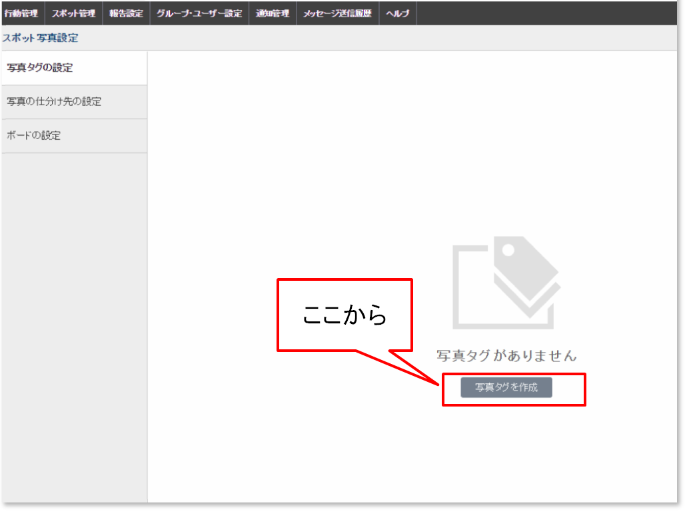
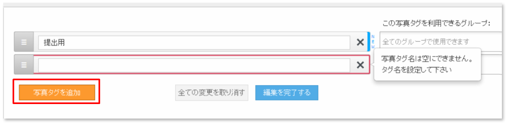

2. 設定の操作方法（管理サイト）¶
注釈
本章の設定操作はシステム管理者で行います。
2-1. 「スポット写真設定」を開く¶
- 写真管理を使いはじめるときは、まず管理サイトの「スポット写真設定」でいくつかの項目設定を行います。
- システム管理者 で管理サイトにログインして、メニューバーの「スポット管理」＞「スポット写真設定」をクリックします。
- スポット写真設定画面に移動します。
- 設定項目「写真タグの設定」「写真の仕分け先の設定」「ボードの設定」が左側メニューに表示されています。
2-2. スポット写真の設定をする¶
使いはじめるときに設定する項目は以下の３つです。
写真タグ¶
- 写真にタグをつけて、タグで検索ができます。
- 保存した写真のタグはあとから編集できます。-> 2-3. 写真タグを設定する
仕分け先¶
- 写真を種類ごとに保存するフォルダです。
- 仕分け先を「店舗写真」として、その下に「外観」「店内」「メニュー」というように、パソコンのフォルダのような階層構造で設定できます。 -> 2-4. 仕分け先を設定する
ボード¶
- 写真撮影時にボード（黒板など）をつけることができます。
- 写真と一緒に保存されている情報（メタデータ=撮影日時、撮影者などの情報）を表示させる「ボード」を業務に合わせたフォーマットで設定します。 これは写真に貼り付けた状態で保存されます。-> 2-5. ボードを設定する
2-3. 写真タグを設定する¶
「写真タグの設定」をクリックで、タグ設定画面になります。

最初は「写真タグがありません」と表示されています。 「写真タグを作成」ボタンから開始します。
注釈
タグの設定がなくでも利用できます。
「写真タグを追加」ボタンをクリックして作成を開始します。

複数のタグを登録するときは、「写真タグを追加」をもう一度押します。
- タグを使用するグループを選ぶことができます。指定しない場合は「すべてのグループで使えるタグ」となります。
- ✕を押すとタグが削除されます。

注釈
「写真タグ」の決め方は？
2-4. 仕分け先を設定する¶
「仕分け先」は、スポット写真を保存するフォルダにあたるものです。
「写真の仕分け先の設定」をクリックすると、以下の画面になります。

「仕分け先を新規追加」をクリックすると、作成フォームが表示されます。

「仕分け先」は階層を作って細かく設定することができます。

注釈
「仕分け先」の決め方は？
「仕分け先」の大項目は、たとえば「賃貸物件」「土地」「売買物件」など、スポットの特徴に合わせて設定します。 仕分け先を１つも設定していなくでも運用は可能ですが、仕分け先の変更は運用後に1回限りと制限されています。 写真の管理しやすさを考慮して、実際の業務に合った設定をしておきましょう。-＞仕分け先を変更する（リンク）


{kind=link}
{kind=link}
{kind=link}
{kind=link}
{kind=link}
{kind=link}